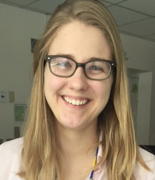

<!--
@license
Copyright (c) 2016 The Polymer Project Authors. All rights reserved.
This code may only be used under the BSD style license found at http://polymer.github.io/LICENSE.txt
The complete set of authors may be found at http://polymer.github.io/AUTHORS.txt
The complete set of contributors may be found at http://polymer.github.io/CONTRIBUTORS.txt
Code distributed by Google as part of the polymer project is also
subject to an additional IP rights grant found at http://polymer.github.io/PATENTS.txt
-->

<link rel="import" href="../../bower_components/polymer/polymer.html">

<link rel="import" href="../data/members-behavior.html">
<link rel="import" href="../common-element/toc-behavior.html">
<link rel="import" href="../common-element/member-card-element.html">
<link rel="import" href="../common-element/footer-element.html">
<link rel="import" href="../common-element/common-styles.html">

<dom-module id="meg-people">
  <template>
    <style include="common-styles"></style>
    <style>
      :host {
        display: block;
      }
    </style>

    <article>
      <header class="center">
        <h1>PEOPLE</h1>
      </header>

      <nav>
        <div>Contents</div>
        <ul>
          <li><a href="#about" label="about" on-tap="__scrollTo">About</a></li>
          <li><a href="#meg" label="meg" on-tap="__scrollTo">MEG Team</a></li>
          <li><a href="#alumni" label="alumni" on-tap="__scrollTo">Alumni</a></li>
        </ul>
      </nav>

      <main>

        <section>
          <h2 id="about" class="maxflow" class="maxflow">About</h2>

          <p>We are the BabyMEG Team and we are located in the main building of Boston Children's Hospital on Longwood Ave. Please see below to learn more about each of us!</p>

        </section>

        <section>
          <h2 id="meg" class="maxflow" class="maxflow">MEG Team</h2>
          <div style="text-align: center;"</div>
          <p><font size="5">Yoshio Okada, PhD</font></p>
          <div style="text-align: center;"></div>
          <p>&nbsp;</p>
          <div style="text-align: center;"</div>
<p>Associate Scientific Researcher at Boston Children's Hospital</p>
<p>Clinical Professor of Pediatrics at Harvard Medical School</p>
<p>Director, MEG Program </p>
<div style="text-align: center;"</div>
<p>&nbsp;</p>
<p>Dr. Okada received his PhD from the Rockefeller University in New York City in the fields of </p>
<p>psychology and neuroscience. He is the pioneer in the study of the physiological basis of </p>
<p>magnetoencephalography (MEG) and electroencephalography (EEG). He has established through his </p>
<p>research carried out over a period of 25 years that these two noninvasive techniques provide direct</p>
<p>measurements of the electrophysiological activity of synchronously active neurons. Dr. Okada has </p>
<p>made contributions to the development of novel biomagnetic instruments that have opened new ways to </p>
<p>study the electrophysiology of the brain and is an inventor of new instruments that are either completed</p>
<p>and in use or in the process of development. These instruments include a pediatric MEG system called </p>
<p>“babySQUID”, the first of its kind optimized for studying the electrophysiological development of </p>
<p>human brain, a second-generation pediatric MEG system called “babyMEG”, which is based on the </p>
<p>babySQUID, but provides a whole-head coverage with sensitivities and spatial resolution that are </p>
<p>higher than any existing MEG instruments, an inverted SQUID (superconducting quantum interference </p>
<p>device) microscope capable of simultaneously measuring biomagnetic fields, electrical potentials and </p>
<p>optical images from biological preparations and a whole-head cryogenically cooled Transcranial </p>
<p>Magnetic Stimulation (TMS) system that will provide unique novel methods for studying functional </p>
<p>networks of the human brain. Dr. Okada was a founder of a center called “Biomedical Research and </p>
<p>Integrative Neuroimaging Center” or BRaIN Imaging Center at the University of New Mexico prior to </p>
<p>joining Harvard Medical School.</p>
<p>&nbsp;</p>
  <p><font size="5">Banu Ahtam, DPhil</font></p>
  <div style="align: center;"></div>
  <p>&nbsp;</p>
  <p>Instructor in Pediatrics at Harvard Medicial School</p>
  <p>Associate Scientific Research Staff at Boston Children's Hospital</p>
  <p>Manager, MEG Program </p>
  <p>&nbsp;</p>
  <p>Dr. Ahtam received her undergraduate degree in Psychology from Koc University in Istanbul, Turkey.</p>
 <p>She received a Master of Science degree from the Experimental Psychology Department of the</p>
 <p>University of Oxford. She completed her doctoral studies at the Psychiatry Department in the</p>
 <p>University of Oxford as a Clarendon Scholar. For her doctoral project, she focused on language</p>
 <p>processing in autism spectrum disorders and typically developing children, using MEG, behavioral,</p>
 <p>and neuropsychiatric measures. Since June 2011, at BCH, she has been leading and working on</p>
 <p>important projects that will help us understand the brain structure and function of neurodevelopmental</p>
 <p>disorders using multimodal noninvasive imaging techniques. She is experienced in MEG, EEG, DTI,</p>
 <p>sMRI, and rs-fMRI, including protocol design, data acquisition, and statistical processing. She is also</p>
 <p>deeply familiar with pediatric neuroimaging research of neurodevelopmental disorders and has a</p>
 <p>strong background in neuropsychological measures. In addition to conducting research, she is also the</p>
 <p>manager of the MEG Program. </p>
 <p>&nbsp;</p>
 <p><font size="5">Limin Sun, PhD</font></p>
 <div style="align: center;"></div>
 <p>&nbsp;</p>
 <p>Instructor in Pediatrics at Harvard Medicial School</p>
 <p>Associate Scientific Research Staff at Boston Children's Hospital</p>
 <p>&nbsp;</p>
 <p>Dr. Sun received his masters degree in Biomedical Engineering from China Medical University. He </p>
 <p>received his PhD in Electrical Engineering from Otto-von-Guericke University in Germany. For his </p>
 <p>PhD thesis, he worked on Simultaneous recording of EEG and fMRI. He completed his first </p>
 <p>postdoctoral fellowship at Max Planck Institute for Brain Research at Frankfurt am Main, Germany.</p>
 <p>His second postdoctoral fellowship was at Mass General Hospital and Boston Children's Hospital</p>
 <p>where he focused on developing the code for the acquisition software of the two pediatric MEG</p>
 <p>systems, BabySQUID and BabyMEG. He has a strong background in signal processing and is</p>
 <p>proficient in several programming languages including C++, C#, Matlab, and LabView. His main</p>
 <p>research interests are the artificial signals removal during the biomedical signal recording, the</p>
 <p>development of MEG acquisition system, embedded coding, and the psychology analysis on Autism</p>
 <p>Spectrum Disorders (ASD) and schizophrenia. </p>
<p>&nbsp;</p>
<p><font size="5">Ashley Curran, BS</font></p>
<div style="align: center;"></div>
<p>&nbsp;</p>
<p>Clinical Research Coordinator</p>
<p>&nbsp;</p>
<p>Ashley received her Bachelor of Science degree in Biochemistry from the University of Massachusetts</P>
<p>Amherst. She has been working as a clinical research coordinator for a few years in the Longwood </p>
<p>Medical Area including the BabyMEG facility. Her primary roles include advertisement of research </p>
<p>studies, recruiting participants and assessing their eligibility for the studies, scheduling and </p>
<p>consenting, documenting studies, and maintaining IRB protocols. She is also involved in data </p>
<p>acquisition and data analysis. She has an interest in neonatology and hopes to continue on to </p>
<p>medical school in the future.
<p>&nbsp;</p>
<p><font size="5">Kathryn Gill, BA</font></p>
<div style="align: center;"></div>
<p>&nbsp;</p>
<p>Research Study Assistant</p>
<p>&nbsp;</p>
<p>Kathryn (Katie) received her Bachelor of Arts degree from Mount Holyoke College where she majored </p>
<p>in Psychology. At the BabyMEG facility, her responsibilities include preparing the lab for</p>
<p>electrophysiological (human) recordings, helping with data acquisition, data organization, data pre-</p>
<p>processing/analysis, helping with recruitment, ordering supplies and equipment for the lab, maintaining</p>
<p>the day-to-day operations, and preparing and organizing documentation. Her primary research interest</p>
<p>is language development and she hopes to become a clinical neuropsychologist in the future. </p>
<p>&nbsp;</p>
        </section>

        <section>
          <h2 class="maxflow" class="maxflow">Alumni</h2>
<div style="text-align: center;"</div>
          <div id="alumni" class="cards">

            <ul style="list-style-type:square">
                <p><u>Team members</u></p>
<li><font size="4">Natsuko Mori</font></li>
<li><font size="4">Nirupama Sharadamma</font></li>
<li><font size="4">Tapsya Nayak</font></li>
<li><font size="4">Chiran Doshi</font></li>
<li><font size="4">Christos Papadelis, PhD</font></li>
<li><font size="4">Anne Philip</font></li>
<li><font size="4">Seok Lew, PhD</font></li>
</ul>
<p>&nbsp;</p>

<ul style="list-style-type:square">
  <p><u>Visiting researchers </u></p>
<li><font size="4">Alexander Hunold</font></li>
<li><font size="4">Kikuko Nagao</font></li>
<li><font size="4">Maria Nazarova, MD, PhD</font></li>
<li><font size="4">Lorenz Esch</font></li>
<li><font size="4">Dulce Maria Magdelano Arroyo</font></li>
<li><font size="4">Mario Bräcklein</font></li>
</ul>
<p>&nbsp;</p>

<ul style="list-style-type:square">
  <p><u>Interns</u></p>
<li><font size="4">Joseph Wachutka</font></li>
<li><font size="4">Jackson Stone</font></li>
<li><font size="4">Rebbecca Hathaway</font></li>
<li><font size="4">Ethan Cottrill</font></li>
<li><font size="4">Benjamin Ferleger</font></li>
<li><font size="4">Stephanie Pawlyszyn</font></li>
</ul>

          </div>
        </section>

      </main>

      <footer-element></footer-element>

    </article>

  </template>

  <script>
    Polymer({
      is: 'meg-people',
      behaviors: [TOCBehavior, MembersBehavior],
      _isMEG: function(item) {
        return item.team.indexOf('meg') >= 0 && item.team.indexOf('alumni') < 0;
      },
      _isAlumni: function(item) {
        return item.team.indexOf('meg') >= 0 && item.team.indexOf('alumni') >= 0;
      },
    });
  </script>
</dom-module>
